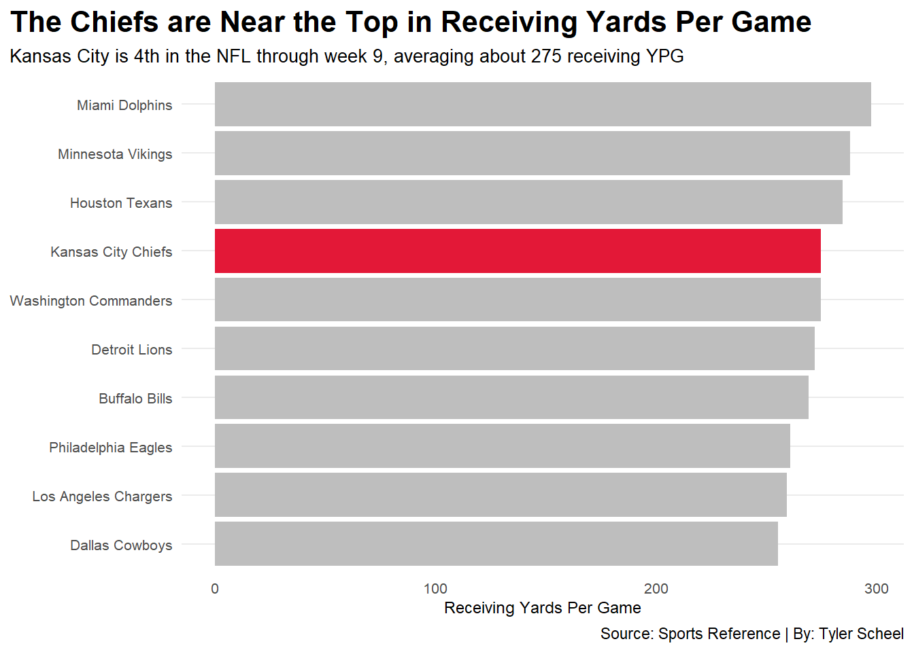
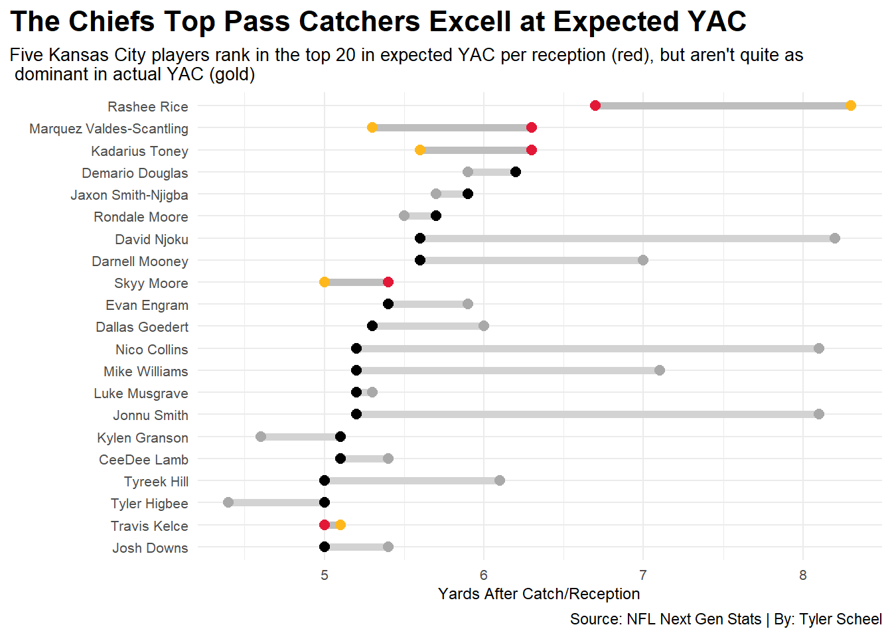

Kansas City Pass Catchers: Underrated or Underhated?
Author
Tyler Scheel
Published
November 12, 2023
With 5 Straight AFC Championship game appearances and 2 Super Bowl wins since 2018, Chiefs fans have to get creative when finding something to complain about. Over the years it’s been the offensive line, the defense, the run game to name a few. This season, most fans believe the pass catchers, especially the receivers, are holding the team back. The eye test is one thing, but stats are another.
Are the Chiefs pass catchers actually as bad as people think?
I’ll first show some of the things they do well, then their biggest flaw. To start, let’s look at the basic, but pretty telling, stat that is yards per game. Good passing offenses get the most passing yards, it’s that simple.
Code
library(tidyverse)library(ggrepel)library(ggalt)library(ggtext)library(gt)NGSplayer <-read_csv("NGSv2.csv")TeamAdv23 <-read_csv("TmAdvRec23v2.csv")TopRecOffenses <- TeamAdv23 |>mutate(YPG = Yds/G) |>summarise(Tm, YPG) |>arrange(desc(YPG)) |>top_n(10)ChiefsYPG <- TeamAdv23 |>mutate(YPG = Yds/G) |>summarise(Tm, YPG) |>filter(Tm =="Kansas City Chiefs")PlayerYAC <- NGSplayer |>summarise( PLAYER, YACpr, xYACpr,YACoverExp = YACpr - xYACpr) |>arrange(desc(xYACpr)) |>top_n(20,xYACpr)ChiefsYAC <- NGSplayer |>summarise( PLAYER, YACpr, xYACpr,YACoverExp = YACpr - xYACpr) |>arrange(desc(xYACpr)) |>top_n(20,xYACpr) |>filter(PLAYER =="Rashee Rice"| PLAYER =="Marquez Valdes-Scantling"| PLAYER =="Kadarius Toney"| PLAYER =="Skyy Moore"| PLAYER =="Travis Kelce")DropsTCR <- TeamAdv23 |>summarise( Tm, Drop, TrueCatchRate = Rec/OnTgt) |>arrange(desc(Drop)) |>top_n(10,Drop)ggplot() +geom_bar(data=TopRecOffenses,aes(x=reorder(Tm, YPG), weight=YPG), fill="grey") +geom_bar(data=ChiefsYPG,aes(x=reorder(Tm, YPG), weight=YPG), fill="#E31837") +coord_flip() +labs(x="",y="Receiving Yards Per Game",title="The Chiefs are Near the Top in Receiving Yards Per Game", subtitle ="Kansas City is 4th in the NFL through week 9, averaging about 275 receiving YPG",caption="Source: Sports Reference | By: Tyler Scheel" ) +theme_minimal() +theme(plot.title =element_text(size =16, face ="bold"),plot.subtitle =element_text(size =10),axis.title =element_text(size =9),axis.title.y =element_blank(),axis.text =element_text(size =8),axis.ticks =element_blank(),panel.grid.minor =element_blank(),panel.grid.major.x =element_blank(),plot.title.position ="plot",legend.position="bottom" )

The stat is useful, but it includes many factors besides the ability of the pass catchers, such as offensive play calling and quarterback play. However, being top five in yards isn’t something we can just ignore.
What stats can we look at that focus more on the ability of the receiver?
Yards after the catch give a much better idea of how effective the player is regardless of quarterback play. NFL Next Gen Stats has a very intriguing statistic called expected yards after catch, which is “based on numerous factors using tracking data such as how open the receiver is, how fast they’re traveling, how many defenders/blockers are in space, etc.” The data is filtered to only receivers and tight ends with at least 25 targets.
Code
ggplot() +geom_dumbbell(data=PlayerYAC, aes(y=reorder(PLAYER, xYACpr), x=YACpr, xend=xYACpr),size =2,colour ="lightgrey",colour_x ="darkgrey",colour_xend ="black") +geom_dumbbell(data=ChiefsYAC, aes(y=reorder(PLAYER, xYACpr), x=YACpr, xend=xYACpr),size =2,colour ="grey",colour_x ="#FFB81C",colour_xend ="#E31837") +labs(x="Yards After Catch/Reception",y="",title="The Chiefs Top Pass Catchers Excell at Expected YAC", subtitle ="Five Kansas City players rank in the top 20 in expected YAC per reception (red), but aren't quite as \n dominant in actual YAC (gold)",caption="Source: NFL Next Gen Stats | By: Tyler Scheel" ) +theme_minimal() +theme(plot.title =element_text(size =16, face ="bold"),plot.subtitle =element_text(size =10),axis.title =element_text(size =9),axis.text =element_text(size =8),plot.title.position ="plot" )

Kansas City has the highest expected YAC per reception in the NFL by far. However, they are third in actual YAC. That tells us that even though the Chiefs are great after the catch, they could be even better.
So when Kansas City playmakers get the ball in their hands, they are statistically very effective. But catching the ball has been an issue for the Chiefs all season. This table shows the 10 teams with the most drops through week 9 as well as their true catch percentage. True catch percentage is essentially what percentage of on-target throws are caught. Kansas City ranks 27th in true catch percentage.
The Chiefs lead the NFL in dropped passes, nearly doubling the league average
Team
Drops
True Catch Rate
Kansas City Chiefs
25
86.9%
Los Angeles Rams
21
83.6%
Detroit Lions
19
87.7%
Cincinnati Bengals
18
91.2%
Dallas Cowboys
18
84.6%
Minnesota Vikings
17
85.6%
Cleveland Browns
15
90.0%
Indianapolis Colts
15
88.6%
Green Bay Packers
15
82.1%
Washington Commanders
15
91.4%
By: Tyler Scheel | Source: Sports Reference
In conclusion, the Chiefs pass catchers are above average in every category that isn’t about actually catching the ball. With a young, inexperienced group of skill players, it isn’t particularly surprising to see them dropping passes. Even with these issues, their ability to get separation and work for yards after the catch gives the group immense upside moving forward.
All in all, if the worst thing Kansas City fans have to whine about are these surprisingly productive receivers and tight ends, they could be well on their way to another world title.